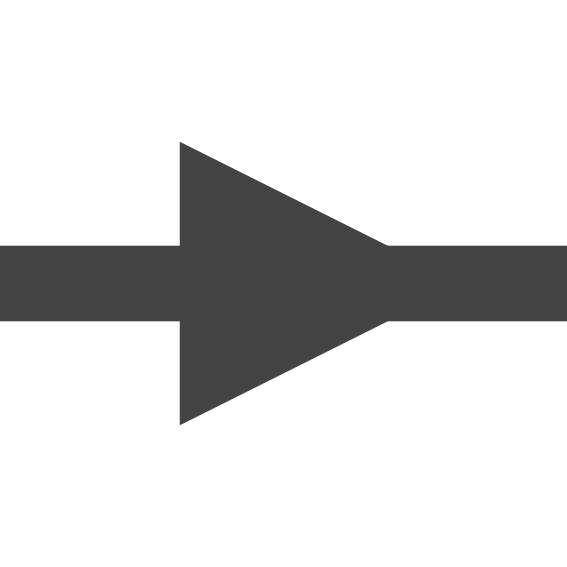
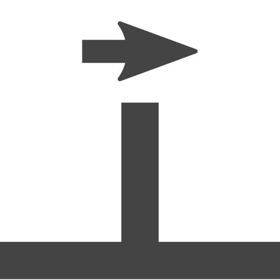
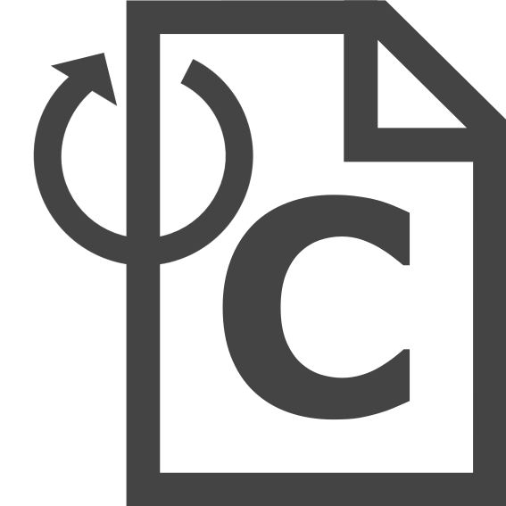

The user interface¶
The user interface consists of a menu bar, a tool bar, and three widgets. The center
and the main widget of the interface is the diagram. Here different components can be
placed and connected. The available components can be found in the widget on the
lefthand side and can simply be dragged into the diagram to be placed. On the
righthand widget the file tree of the ddck-folder can be seen. For each component
dropped into the diagram an additional folder is created in this tree.
{kind=link}
Making a diagram¶
Components are simply added to a diagram by dragging the respective item from the library on the left into the central widget. It is recommded to toggle the snap grid for placing components to ease the alignment of them:

Connections can be created by moving the cursor over a port, pressing the mouse, and dragging the cursor to the port that is supposed to be connected, and release the mouse there.
Loading ddck-files¶
When dropping a component that is supposed to be represented by a ddck, a folder is created in the ddck-folder of the project that dynamically changes its name with the name of the component. All files that are needed to represent the respective component when building a dck should be loaded into this component folder.
The tool bar¶
Save
{kind=link}
Open
{kind=link}
Zoom in
{kind=link}
Zoom out
{kind=link}
Toggle labels
{kind=link}
Start visualization of mass flows
Creates the following file for the diagram:
..\[project name]\[project name]_mfs.dckAfterwards, it runs TRNSYS from this file, and then shows a visualization of the mass flows in the diagram.
{kind=link}
Export hydraulic.ddck
Exports the following files:
..\ddck\hydraulic\hydraulic.ddck ..\ddck\control\valve_control.ddckThese files contain the information about the hydraulics of the system. The so-called black box component output equations originating from the storage tank are loaded to
hydraulic.ddckfrom:..\ddck\[storage tank]\[storage tank].ddcxIf this file does not exist yet, when
hydraulic.ddckis exported, the export of the storage tank will be triggered.
{kind=link}
Update run.config
Updates the following entries in
run.config:string PROJECT$ string projectPathand the used ddcks (from the current content of the
ddck-folder).
{kind=link}
Export dck
{kind=link}
Run simulation

Exports the dck-file like above and launches a simulation with Trnsys.
Delete diagram
{kind=link}